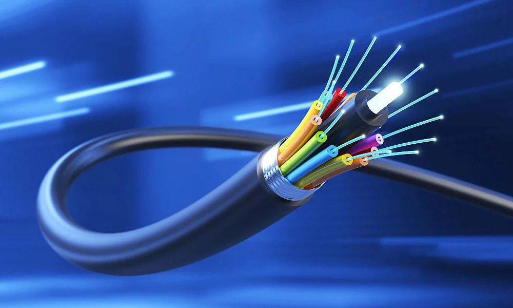
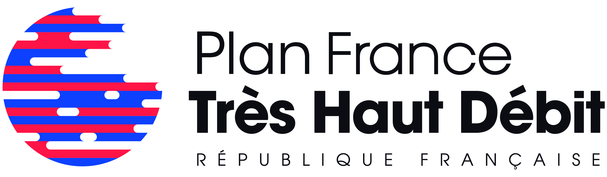

The Arrival of Fiber (2007-2009)
Dès 2007, la France commence à équiper son réseau de la fibre optique. Contrairement à l'ADSL qui utilise des lignes en cuivre, la fibre optique utilise des câbles en verre ou en plastique pour transmettre des données sous forme de lumière, ce qui permet :
- Un transfert beaucoup plus rapide. Cette technologie permet des débits plus élevés que le réseau ADSL. Elle offre des débits d’environ 200 Mb/s.
- Une perte de débit liée à la distance à parcourir quasiment nulle.
- Une stabilité de connexion renforcée, moins sujette aux perturbations environnementales
À son arrivée, la fibre optique est principalement déployée dans les zones les plus urbanisées, où les couts de déploiement sont moindres.
Launch of the France Très Haut Débit (France Very High Speed) Plan (2013)
En 2013, le Plan France Très haut débit est lancé. Il vise à construire un réseau en fibre optique jusqu’à l’abonné sur tout le territoire francais à la fin 2022. Cette initiative a deux objectifs :
- Réduire la fracture numérique entre les territoires
- Garantir l’accès internet très haut débit (supérieur à 30 Mb/s) pour tous les citoyens, qu’ils résident en urbaine ou rurale.
Ce nouveau réseau en fibre optique a vocation à remplacer progressivement le réseau historique en cuivre (RTC/ADSL) et à devenir le seul réseau filaire d'accès fixe à internet présent sur tout le territoire français.
Progress report in 2025
Qu’en est-il aujourd’hui ? Le plan se déroule-t-il comme prévu ?
À la fin de l’année 2023 le déploiement est réalisé à 84 %, alors que l’objectif initial était une couverture complète en 2022. l'ARCEP a envoyé une amende à Orange pour le retard pris dans la couverture des zones moins denses.
Compte tenu du ralentissement des déploiements, il est alors estimé que l'objectif de couverture complète en 2025 ne sera pas atteint.
Néanmoins, la fibre continue de se généraliser : en janvier 2025, 39,9 millions de locaux y sont éligibles, soit 91 % du territoire français, selon l'ARCEP. Des estimations indiquent que ce pourcentage pourrait atteindre 100 % fin 2025, mais cela semble incertain: 4,6 millions de locaux restent à raccorder, dont beaucoup dans des zones complexes ou à faible densité.